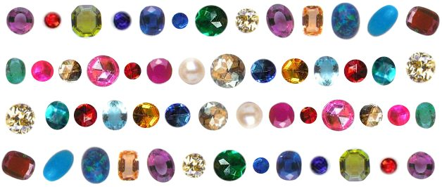
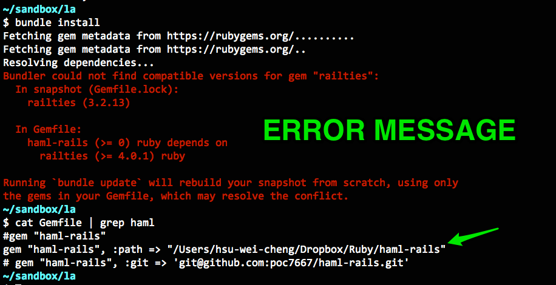
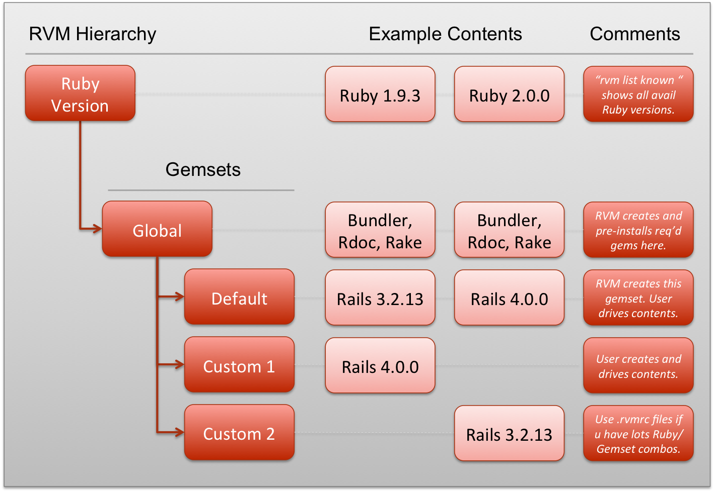
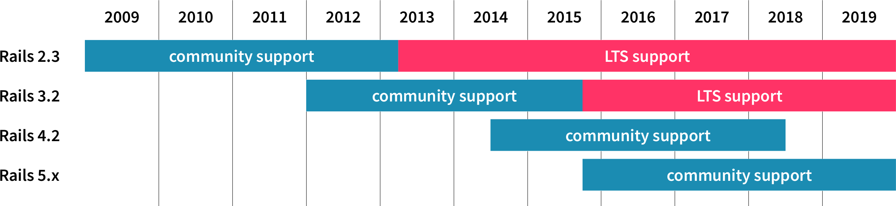
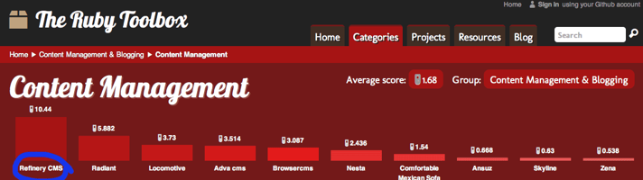

Gems
Object Orientation and Ruby
Created by Adrián Pradilla / @apradillap
Hello There
Gems enables you look at the awesome packaging system that Ruby provides for distributing programs and libraries. This presentation will show you examples of what it can do.
Previusly on ...
Object Orientation and Ruby
- Object Orientation
- Read the documentation
- Git and Github
- Pry
Without gems?

My treasures?
Rubygems
Package manager for the Ruby programming language.
Gems
Dependencies
Errors

Concepts
- Ruby
- Ruby Gems
- RubyGems
- Ruby on Rails
- Ruby on Rails
Practical problems
Need to send emails?
Need a testing framework (or three)?
Want to set up a web server?
Nead to Search Engine Optimization (SEO) plugin for Ruby on Rails applications?
Need flexible authentication solution?
Fragment Styles
There's different types of fragments, like:
grow
shrink
fade-out
current-visible
highlight-red
highlight-blue
Is there a gem for ...?
RVM

Update, upgrade and support

Gem command
The gem command is used to install, build, download and upload Gem packages.
Installation
gem install rails
Uninstall
gem uninstall rails
Listing installed gems
gem list --local
Listing available gems
gem list --remote
Create RDoc documentation for all gems
gem rdoc --all
Search available gems
gem search rails --remote
Example 1: consul Gemfile
source 'https://rubygems.org'
# Bundle edge Rails instead: gem 'rails', github: 'rails/rails'
gem 'rails', '4.2.5'
# Use PostgreSQL
gem 'pg'
# Use SCSS for stylesheets
gem 'sassc-rails'
# Use Uglifier as compressor for JavaScript assets
gem 'uglifier', '>= 1.3.0'
# Use CoffeeScript for .coffee assets and views
gem 'coffee-rails', '~> 4.1.0'
# See https://github.com/rails/execjs#readme for more supported runtimes
# gem 'therubyracer', platforms: :ruby
# Use jquery as the JavaScript library
gem 'jquery-rails'
gem 'jquery-ui-rails'
# Turbolinks makes following links in your web application faster. Read more: https://github.com/rails/turbolinks
gem 'turbolinks'
gem 'devise'
# Use ActiveModel has_secure_password
# gem 'bcrypt', '~> 3.1.7'
gem 'omniauth'
gem 'omniauth-twitter'
gem 'omniauth-facebook', '~> 3.0.0'
gem 'omniauth-google-oauth2', '~> 0.3.0' My favorite gems
https://github.com/plataformatec/devise
https://github.com/ryanb/cancan
https://github.com/deivid-rodriguez/byebug
https://github.com/mperham/sidekiq
https://github.com/activeadmin/activeadmin
https://github.com/thoughtbot/paperclip
https://github.com/norman/friendly_id
https://github.com/sparklemotion/nokogiri
...
The Ruby Toolbox

Exercise - Level 1
Find and install (15 minutes)
- Graphics gem
- Debugger
- Pagination gem
- Fuzzy string matching
Exercise - Level 2
Changing database from PostgreSQL to MySQL (15 minutes)
Use Mysql as the database for Active Record.
Extra ball
Exercise - Level 3
Make your own gem (30 minutes)
>> Euromillion.randomillion
[5, 8 , 17, 25, 48]
Try it out at
http://guides.rubygems.org/make-your-own-gem/
Much more
- Right-to-left support
- Extensive JavaScript API
- Auto-progression
- Parallax backgrounds
- Custom keyboard bindings